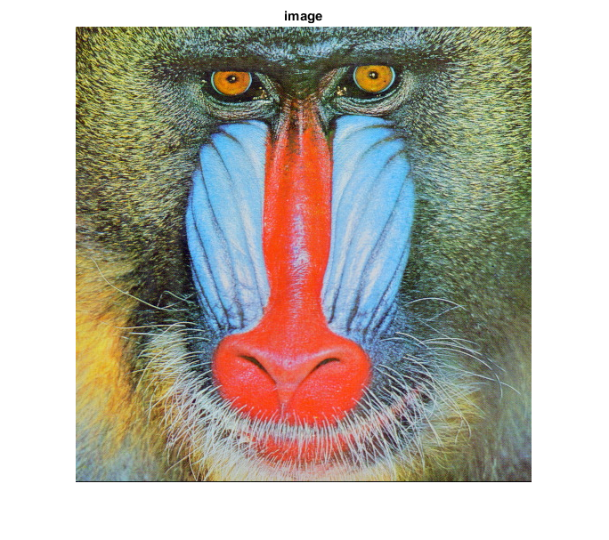
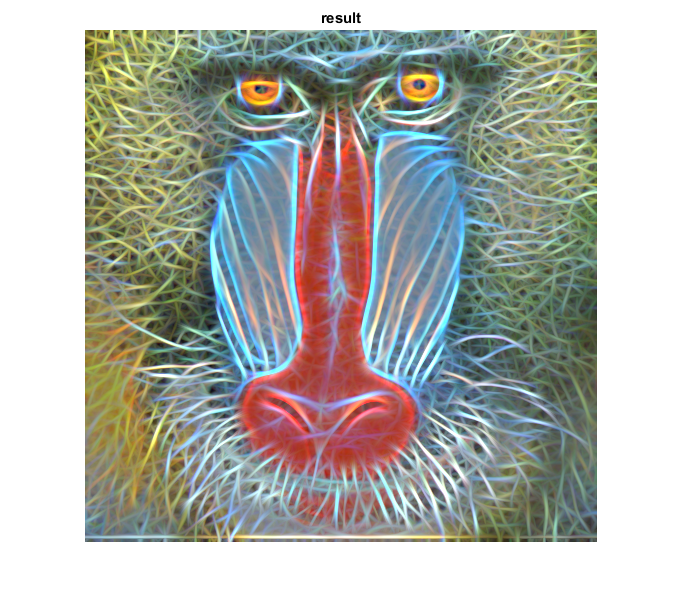

Gabor filtering
This sample demonstrates the use of multiple Gabor filter convolutions to get Fractalius-like image effect.
Sources:
load image
img = imread(fullfile(mexopencv.root(),'test','img001.jpg'));
build an array of Gabor filters with different orientations
ksize = 31; thetas = 0:pi/16:pi-pi/16; filters = cell(size(thetas)); for i=1:numel(thetas) kern = cv.getGaborKernel('KSize',[ksize ksize], 'Theta',thetas(i), ... 'Sigma',4, 'Lambda',10, 'Gamma',0.5, 'Psi',0, 'KType','single'); kern = kern / (1.5 * sum(kern(:))); filters{i} = kern; end
visualize Gabor filters
if mexopencv.require('images') montage(cat(4,filters{:}), 'DisplayRange',[]) end
process images using Gabor filters and accumulate results (Note: you can use PARFOR instead of FOR to run this in parallel)
tic res = zeros(size(img), class(img)); for i=1:numel(filters) fimg = cv.filter2D(img, filters{i}); res = max(res, fimg); end toc
Elapsed time is 0.550728 seconds.
show result
figure, imshow(img), title('image') figure, imshow(res), title('result')